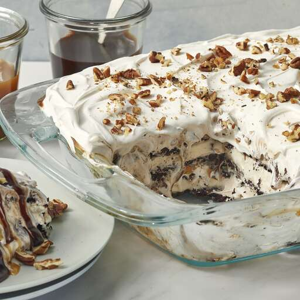

Ice Cream Cake

Description
This ice cream cake was renamed as "The best dessert i've ever eaten" by my
daughter this memorial day. I had made it before, but my wife ate all of it before
i get the chance to taste it my wife doesn't like when i take this desert to a large
gathering because it means he won't have any leftover!
ingredients
- 24 vanilla ice cream sandwich
unwrapped
- 2 (8 ounce) containers whipped topping
(such as Cool Whip), thawed
- 1 (12 ounce) jar hot fudge ice cream topping, warmed
- 1 (12 ounce) jar caramel ice cream topping
- 1/4 cup chopped pecans, or to taste
Steps to Prepare
- Arrange a layer of ice cream sandwiches in the bottom
of a 9x13-inch dish;
top with a layer of whipped topping,
hot fudge topping, and caramel topping.
Repeat layering
with remaining ice cream sandwiches,whipped topping, hot
fudge
topping, and caramel topping, ending with a top layer
of whipped topping. sprinkle with pecans
- Cover the dish with aluminum foil and freeze until set